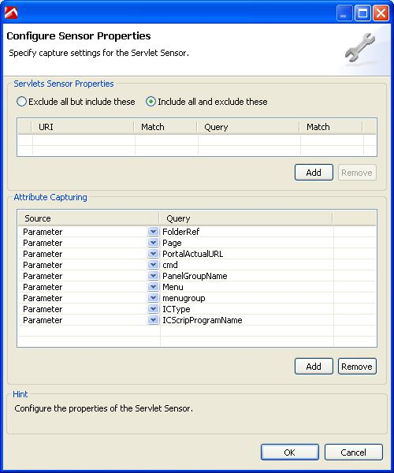

PeopleSoft 8 Sensor Pack
Table of Contents (Start)
PeopleSoft 8 Sensor Pack
Overview
|
Name |
PeopleSoft 8 Sensor Pack |
|
Description |
This Knowledge Sensor Pack can be used to help quantify and diagnose performance issues related to PeopleSoft and Jolt specific code. |
|
Version |
1.0 |
|
dynaTrace Diagnostics Version |
2.5 and higher |
|
Author |
Eric.Horsman@dynatrace.com |
|
License |
|
|
Support |
|
|
Download |
Installation
-
Save the attached file locally to the computer where the dynaTrace Diagnostics Client is installed.
-
Unzip the file.
-
In the dynaTrace Diagnostics Client, right-click on the Diagnostics Server and select 'Preferences...'.
-
Click on "Sensor Packs".
-
Click on the "Import..." button.
-
Select "Custom Sensor Type (*.dtdcs)" in the "Files of type" dropdown.
-
Navigate to the directory where you extracted the .dtdcs file and click "Open".
You can confirm successful import by observing the PeopleSoft Sensor Pack in the Sensor Packs Panel. This Knowlege Sensor Pack is now Placed and Active within all System Profiles on this Diagnostics Server.
Exercise the PeopleSoft 8 application.
To further understand the usage and user activities in context to PeopleSoft, specific Servlet attributes can be captured. To do so, follow these steps:
-
Right Click on the configuration in which you wish to add Servlet attributes and select "Properties...".
-
In the left hand panel expand/select "All Agents" or the specific Application Instance that pertains to PeopleSoft.
-
Select "Sensor Configuration".
-
Find the "Servlets" Sensor Pack in the "Sensor Configuration" list.
-
Click on"Properties" in the "Options" column.
-
Within the "Configure Sensor Properties" dialog, click on the "Add" button below the "Attribute Capturing" section (lower half).
-
A new entry will appear under the "Source" column in the "Attribute Capturing" list. Select "Parameter" from the drop down if it is not already selected.
-
Type the term "Page" in the corresponding "Query" column
-
You have now added the "Page" parameter. Follow steps 6-8 to add the following additional parameters:
-
FolderRef
-
PortalActualURL
-
cmd
-
PanelGroupName
-
Menu
-
menugroup
-
ICType
-
ICScripProgramName
-
-
Select OK.
If you have followed the steps correctly, your Servlet Sensor Properties screen should look like this:
|
 |
You will need to deploy this change into your application by either performing a Hot Sensor Placement or restarting your Application.
Note ** - Some of these parameters may not be valuable to all PeopleSoft deployments, Please remove unnecessarily parameters after usage depicts the value of capturing each parameter.
|
|
||
|
ZIP Archive dynaTrace_Peoplesoft8KSP_v1.0.zipPeopleSoft 8 KSP v1.0 |
Jun 21, 2008byTed Feyler |
|
|
Labels
|
||
Upload fileFile description